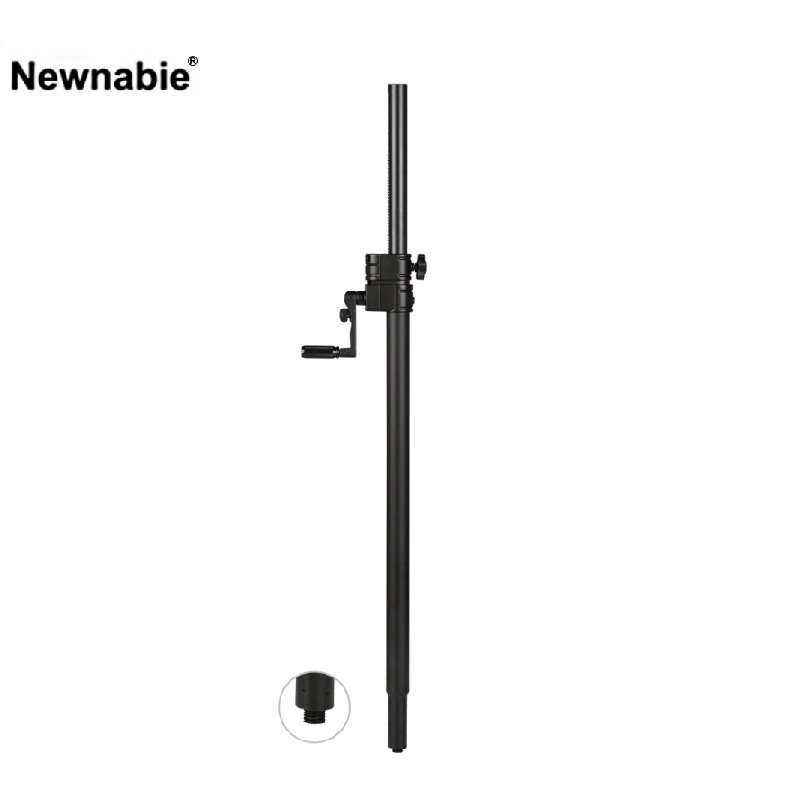

Newnabie NB-048은 핸드 크랭크(One-Hand Adjustable) 방식으로 높이를 조절하는 중급 스피커 스탠드로, Ф35 mm 폴마운트와 M20 나사 체결을 모두 지원하는 듀얼 어댑터 구조입니다. 1000–1650 mm의 높이 범위와 50 kg 허용 하중으로 일반 PA 현장은 물론, M20 베이스 플레이트 시스템과의 결합도 가능합니다. 크랭크 조작으로 혼자서도 무거운 스피커를 안전하게 올릴 수 있습니다.

핸드 크랭크 방식으로 정밀한 높이 조절이 가능한 중급 스피커 스탠드. Ф35 폴마운트와 M20 나사 체결을 동시에 지원하여 단독 트라이포드와 고정 시스템 양쪽에 모두 대응합니다.
NB-048은 안전 핀 삽입 방식이 아닌, 크랭크 핸들 회전만으로 스피커의 높이를 미세하게 조절하는 중급 핸드 크랭크 스탠드입니다. 안전 핀 방식 대비 훨씬 적은 힘으로 무거운 스피커를 들어 올릴 수 있고, 선형 구동 덕분에 원하는 리스닝 축 위치에 정확하게 스탠드를 멈출 수 있습니다.
최대 차별점은 Ф35 mm 폴마운트와 M20 나사 체결 어댑터가 함께 구현되어 있다는 점입니다. 일반적인 서브우퍼 상부 Ф35 소켓에 꽂아 SUB/TOP 구성을 하는 방식뿐 아니라, M20 베이스 플레이트나 고정 설치용 M20 트레이와 나사로 견고하게 체결해 상설 시스템의 한 축으로 사용할 수 있습니다. 1000–1650 mm의 실용적인 높이 범위와 50 kg 허용 하중으로 중소형 PA 현장 대부분을 커버합니다.
NB-048의 핵심 포인트입니다.
수입원(현대에이브이씨) 유통 기준 사양입니다.
| 모델명 | NB-048 |
|---|---|
| 타입 | Hand-Crank Speaker Stand (핸드 크랭크 스피커 스탠드) |
| Height | 1000 – 1650 mm |
| Load Capacity | 50 kg |
| Mount | Ф35 mm + M20 Screw (듀얼) |
| Material | Steel |
| 조작 방식 | 크랭크 핸들 회전식(One-Hand Adjustable) |
| Net Weight | 2.9 kg |
| 권장소비자가 | 242,000 원 / 조 (VAT 포함) |
※ 본 사양은 수입원(현대에이브이씨) 유통 기준표(2026-01-01) 기재 사항을 기준으로 정리되었습니다. 제조사 Boyong(博洋) 사이트(ep-boyong.com)의 NB-048 등재 정보(이미지·포장 단위)와 병행 확인했습니다.
정밀한 높이 조절과 Ф35/M20 양방향 호환이 요구되는 중소형 PA·상설 설치 환경에 적합합니다.